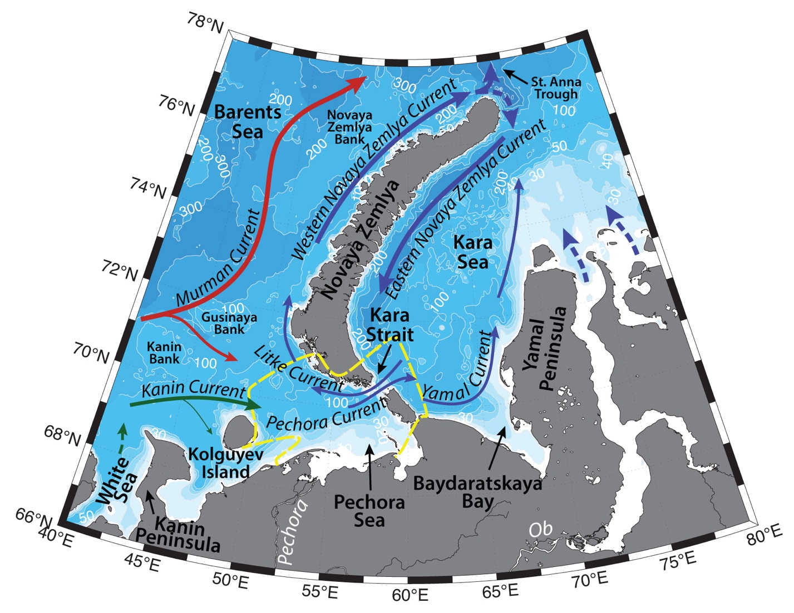

Schematic water circulation patterns and geographical place names in the Novaya Zemlya region. Dashed line marks the studied region.
Pechora Sea is a shallow sea in the southeastern part of Barents Sea. Hydrography of the Pechora Sea region is influenced by the Pechora Current inflow from the west and Litke Current from the east, as well as seasonal sea ice cover, continental runoff and is complicated by topography. All the currents on the Barents Shelf are prone to large seasonal and synoptic variability under the influence of atmospheric forcing.
Murman Coastal Current brings modified Atlantic Water (AW; with T>3°C, S>35 in the Norwegian Current; e.g. Loeng, 1991, Dalpadado et al., 2003) from the Norwegian coast to the Novaya Zemlya. AW is getting transformed on the Gusinaya, Novaya Zemlya, and Kanin banks, by getting fresher and colder and turns to the northeast, where exits the Barents Shelf via St. Anna Trough (e.g. Ozhigin et al., 2000; Shauer et al, 2002).
Some volume of Atlantic Water flows eastwards along the coast, transformed by the mixing with coastal waters (e.g. fresh waters of the White Sea), and proceeds with Pechora Current into the Kara and Yugor straits on their southern sides (with mean transport of 0.3 Sv eastwards; Maslowski et al., 2004). Further this current is known as Yamal Current, that carries modified Barents Sea water (e.g. T=~3.9 °C, S = 23 – 28; Johnson et al., 1997; Pivovarov et al., 2003) across the Kara Sea.
Coastal Waters are advected with Kanin and then Pechora currents eastwards into the straits too. In the Pechora Sea Pechora Coastal Water dominates the water column (-1.8<T<8°C, 30<S<34.5).
Litke current carries cold and fresh waters of the Kara Sea (influenced by the Ob-Yenisey discharge) into the Barents Sea through the northern part of the Kara Strait (with mean transport of 0.1 Sv westwards; Loeng 1991; Maslowski et al., 2004). Upon entering Barents Sea, the current flows northwards, where it joins Western Novaya Zemlya Current (Ozhigin et al., 2000).
Pechora river discharge freshens the water of the region and brings terrigenous material during summertime. As a result, salinity front forms in the northern part of the region. Due to the influence of river discharge into the Pechora Sea and Cheshskaya Guba to the west, influence of the Litke Current and of the outflow current from the White Sea, the region of Pechora Sea has the lowest salinity in the Barents Sea. Salinity of the bay can change from almost fresh waters during the high flood up to 30 – 33, when there is no discharge (Kazanova, 1949).
Ice formation and its mobility in the Pechora Sea are prone to large variability under the influence of atmospheric forcing, the Atlantic inflow and freshwater discharge. Ice usually starts to freeze up from the north of the Barents Sea and in warm years south is not ice covered. Polynyas can form around Kolguyev Island under the influence of winds (Winsor, Bjork, 2000). In the recent years of warming Arctic, the reduction of ice cover in the Barents Sea would lead to more direct atmospheric cooling of the AW during wintertime, and less freshwater input from ice melt (Lien & Trofimov, 2013).